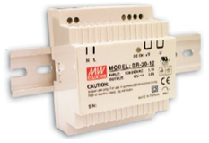
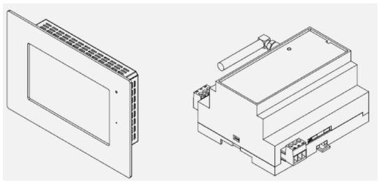

ELEMENTOS DE UN EDIFICIO CON DOMOTICA
UNIDAD DE CONTROL (IoT)
Mapa conceptual
DISPOSITIVOS DE ENTRADA Y ACTUADORES
Mapa conceptual

ELECTRODOMESTICOS DOMOTICOS
Mapa conceptual

MEDIOS DE COMUNICACION EN REDES DOMESTICAS
Mapa conceptual
TECNOLOGIAS APLICADAS EN LOS SISTEMAS DOMOTICOS
Mapa conceptual

PROBLEMATICA UNIVERSIDAD
Continuamos con el problema de modernizar y reorganizar la red para el campus universitario de la universidad estatal tomada como ejemplo en el trabajo colaborativo 1 y 2. Ahora en esta tercera parte del ejercicio deberá resolver los siguientes problemas de este caso de aplicacion:
1- Descripción de los elementos de hardware que se requerirían para la implementación de un sistema domótico
2- Descripción de los elementos de software que se requerirían para su implementación.
3- Descripción y diagramación de cada uno de los elementos del sistema domótico propuesto
Solucion
La domótica del edificio donde están las aulas tiene como objetivos:
1- Ahorro energético mediante la automatización de la iluminación y tomas de corriente.
2- Seguridad en términos de incendios e inundaciones.
Descripción de los elementos de software que se requerirían para su implementación.
Como se mencionó anteriormente, se pretende utilizar la tecnología KNX, que es un estándar a nivel mundial y que ofrece un sistema abierto para el control y gestión inteligente en domótica.
Es de mencionar que se debe adaptar el software a los requerimientos de la domótica del edificio. Por lo tanto se recomienda la ETS que traduce (herramienta de software de ingeniería), que es propia de la KNX.
Esta herramienta creada para todo tipo de usuarios, desde principiantes hasta ingenieros avanzados. Esta funciona en plataformas Windows, la última versión la ETS5 esta optimizada para Windows 8. Tiene una interfaz amigable que permite crear desde los proyectos más sencillos hasta proyectos muy avanzados. Trae un catálogo “online” y buscador de productos muy amplia donde pueden encontrarse referencias de productos o dispositivos, manuales, etc.
Otras funciones interesantes:
ETS5 soporta también dispositivos que se comunican a través de radiofrecuencia (RF).
Asistente de diagnóstico integrado:
Vista de árbol y lista basada en la vista de topología
Todas las funciones de diagnóstico disponibles mediante vista de árbol (a la izquierda)
Resultados reflejados en la vista de lista (a la derecha)
Pestaña “BUS” integrada
Puede usarse también sin proyecto
Panel de informes integrado
Con estas características la herramienta es interesante para crear el proyecto y adaptarlo a las necesidades de automatización del edificio mencionadas anteriormente. La aplicación se puede manejar desde dentro del edificio por medio de un PC como también de forma remota con una Tablet o Smartphone (desarrollo adicional por medio de un app), para dar las órdenes a los dispositivos que se quieran controlar.
Se pretende realizar una propuesta que tiene como objetivo controlar y monitorear la iluminación y el consumo de energía, así como la seguridad en cuanto a incendios e inundaciones de los laboratorios de informática de la universidad se cuenta con 11 laboratorios y cada uno de ellos cuenta con 50 computadores para un total de 550 equipos de cómputo.
Para la implementación de este sistema se propone trabajar con la tecnología KNX el cual es el principal estándar abierto para el control de la vivienda y del edificio reconocido a nivel mundial. KNX posee las siguientes aprobaciones:
Estándar Europeo (CENELEC EN 50090 y CEN EN 13321-1).
Estándar Internacional (ISO/IEC 14543-3).
Estándar Chino (GB/Z 20965).
Estándar Norteamericano (ANSI/ASHRAE 135).
Uno de los motivos que lleva trabajar con esta tecnología es que se trata de un sistema descentralizado y no propietario en el que cada dispositivo puede trabajar de forma autónoma y acceder al bus de comunicación a través de su propia electrónica (microprocesador).
KNX posee varias posibilidades topológicas a la hora de conectar un elemento al bus KNX ya que no son restrictivas, se pueden conectar en estrella, árbol o en bus. Esto es una ventaja en el momento de la instalación.
}A continuación, se detalla la funcionalidad de cada componente así como una breve descripción de sus características.
Fuente alimentación KNX
Esta fuente produce y regula la tensión del sistema KNX. Proporciona una tensión filtrada al bus de 29Vdc para un máximo de 640mA y además tiene una salida para tensión adicional de 24Vdc no filtrada para un máximo de 150mA, muy útil para sobrealimentar componentes a 24V que los necesiten, como puede ser el caso de ciertos sensores.
La principal diferencia de la fuente escogida con el resto de las disponibles en el mercado, es que posee un display y teclas para fines de diagnóstico, supervisión y reset de la instalación domótica.
Alberga una pantalla que facilita la consulta de información, como son la tensión de bus, corriente y temperatura.
Fuente alimentación 12 Vdc, carril DIN
Esta fuente produce una tensión regulada de 12Vdc, que alimenta algunos sensores de la instalación, programador de tarjetas. Irá instalado en un carril DIN dentro del cuadro domótico.
Interfaz KNX
Interfaz para conexión bidireccional entre el Bus KNX y el puerto USBdel ordenador, cuenta con una separación galvánica entre ambos.Permite la comunicación entre el ordenador y la instalación domótica,por lo que permite transferir la programación diseñada en el PC,directamente a los dispositivos del Bus, a través del software ETS3.
Actuador de persianas de 4 canales
Se utiliza para controlar la posición de un total de 4 persianas motorizadas a230V, en este proyecto usaremos un actuador de persianas. Incorporar una serie de botones en la parte frontal que se utilizan para la subida/bajada de persianas de forma manual y para el ajuste de las mismas. Podremos decidir el comportamiento de las persianas, según el tipo de programación realizada. Se conecta al bus a través de un terminal de conexión.
Entrada binaria de 8 canales
Se utiliza un modelo con entradas libre de potencial. Las Entradas Binarias reconocen los cambios de estado en las entradas y generan telegramas KNX dependiendo de la parametrización. En cada una de las entradas se pueden conectar pulsadores/interruptores, contactos de puertas y ventanas, así como cualquier otra salida libre de potencial.
En la instalación se usará solamente un módulo de 8 entradas y servirá para conectar los detectores de inundación e incendio de todo el laboratorio. Este dispositivo lleva integrada también cuatro funciones lógicas. A todas las entradas del interfaz, así como dos objetos externos del bus se les puede asignar la función de entradas de cada una de las funciones lógicas. Esta funcionalidad en la instalación no se utilizará con este dispositivo, sino que se realizará con el panel táctil como se verá más adelante. También tiene unos LEDs de señalización de los estados de todas las entradas conectadas.
Actuador multifunción de 16 salidas
Es un componente KNX capaz de controlar 16 salidas de tipo binario, accionadas por un relé a la salida con una limitación de 16A en cada una de ellas. Las salidas y funciones lógicas son dos bloques que trabajan independientemente y cualquiera puede de ellos puede interactuar con el otro, como si de dos dispositivos autónomos se tratase. Es un módulo de 10 funciones lógicas multi-operación. Dentro de la instalación se utilizará para las sirenas de alarma de incendio e inundación, y para los contactos puertas (abrir/cerrar).
Pulsador de 8 canales
Se trata de un pulsador KNX de 8 canales que lleva incorporado acoplador al bus, así que se puede conectar directamente al bus KNX de la instalación. Se puede utilizar para múltiples funciones: on/off, regulador, persianas, activar escenas, etc. En este caso este dispositivo irá colocado en el aula y servirá para controlar y regular cada uno de los 4 módulos de LED instalados en la sala. No se han previsto más funciones para este componente, aunque en un futuro se podrá programar en él la función que desee el usuario.
Controlador KNX para aire acondicionado
Permite controlar sistemas de aire acondicionado con receptor de infrarrojos incorporado (como Splits, máquinas de conductos con interfaz de infrarrojos integrado, etc). Puede controlar las principales funciones de un Split de aire acondicionado como son encendido/apagado, temperatura, modo, etc. No es compatible con todos los fabricantes de Splits, tiene una lista de productos compatibles publicada. En este proyecto se usará para controlar los splits situados en cada zona del laboratorio. Este dispositivo podrá ser controlado bien mediante la pantalla táctil o por un mando RF. Las funciones que se habilitarán para este dispositivo serán encendido/apagado y subir/bajar temperatura de consigna. Se conecta al bus mediante las clemas de conexión del mismo y al Split mediante un emisor de IR también integrado.
Receptor RF
Son usados para poder integrar emisores de radiofrecuencia en la instalación. Los telegramas que envían estos emisores de radio, como mandos a distancia, son convertidos por el receptor en sus correspondientes telegramas para ser enviados por el bus y poder controlar cualquier dispositivo KNX. Los emisores de radio disponible son: mandos a distancia, pulsadores de pared, transmisores universales y detectores de radio 180. No necesita alimentación auxiliar, nada más que la conexión a la línea del bus. Disponibles hasta 50 canales, libremente asignables a distintas funciones, y un total de 100 posiciones de memoria, para asociar diferentes canales de los emisores. Las informaciones recibidas por radio pueden ser convertidas en telegramas KNX, para accionamiento, regulación de luz, persianas, transmisión de valores o auxiliar de escenas. Como cualquier receptor de vía radio, posee además una memoria para generar él mismo hasta 5 escenas.
En su funcionamiento normal, se alimenta exclusivamente del bus KNX, aunque para su puesta en marcha es necesaria una pila de 9 V. En este proyecto se utilizará junto con dos mandos a distancia RF. Sólo se instalará un módulo receptor ya que nuestro caso esto se usara por cada laboratorio y el mando tendría cobertura suficiente para comunicarse con el receptor. El mando se programará para activar escenas, encender y regular la iluminación del laboratorio, etc. Se instalará un receptor para la pantalla motorizada y otro para las persianas.
Dimmer universal de 4 canales
Este tipo de actuador de 4 canales está diseñado para todo tipo de cargas regulables. En cada una de las cuatro salidas regulables se pueden conectar hasta 2.5A, este módulo será utilizado para regular la intensidad que llega a cada LED. Este dispositivo necesita de alimentación adicional para su funcionamiento, en nuestro caso se usará la fuente de 12 Vdc al igual que se ha usado en otros componentes. La regulación de los dimmers podrá realizarse de varias maneras, a través de un botón en la pantalla táctil de cada laboratorio y mediante un pulsador situado en el laboratorio. La instalación constará de 36 tubos LED de 18W cada uno, por lo que según las especificaciones del dimmer soporten una potencia máxima de 120W, por lo tanto, necesitaremos como mínimo 6 módulos.
Actuador motores de 1 canal
El dispositivo tiene una salida para controlar motores de persianas, puertas, toldos, etc, alimentados a 230 V. Dispone de 4 entradas binarias a las que se puede conectar 4 pulsadores convencionales (sin acoplador al bus) y también de una entrada con sensor de temperatura. La potencia máxima de salida que puede entregar al motor es de 500W y dispone de un fusible de 6,3 A de seguridad. Este componente se instalará para controlar la las persianas y la pantalla de diapositivas.
Sensor analógico/digital
Es un sensor analógico/digital con 4 entradas que pueden ser configuradas de manera individual como: entrada binaria, sonda de temperatura y detector de movimiento. Para las entradas binarias podrá conectarse un pulsador o un interruptor/sensor convencional, libre de potencial. Los sensores de movimiento y de temperatura son externos, no vienen integrados. Pero la principal aplicación de este sensor es su uso como termostato. Al sensor se conectarán los contactos magnéticos de las ventanas y una sonda de temperatura y los detectores de movimiento.
La función de este sensor dentro del sistema instalado serán dos principalmente. La primera es de funcionar como un termostato. Desde el panel táctil podrán leerse las temperaturas medidas por la sonda y controlar todos los termostatos, además desde los pulsadores y mandos RF podrán activarse las escenas que contienen configuraciones específicas de ellos. La otra función importante es el de control de la iluminación, por un lado. El dispositivo no necesita alimentación auxiliar ni tampoco ninguno de sus sensores, solamente es necesaria su conexión al bus.

Sensor crepuscular
Se utiliza para la medición del nivel de luz solar y así regular la intensidad de las luminarias de la sala, de modo que no estén con un alto nivel cuando no es necesario. El ahorro energético en estos casos es muy elevado. Para un laboratorio el nivel de Lúmenes medio es de 500Lm.
Sensor de inundación
Se utilizan para vigilar y detectar fugas, a nivel suelo proveniente de cañerías, desagües, bañeras, lavadoras, etc. Detecta una subida en el nivel de agua a ras de suelo, a través de 4 electrodos externos que sobresalen 1 mm del borde de la carcasa/encapsulado del detector. Está diseñado para conectarse a una Zona de Detección o bien sistemas de alarma. Necesita alimentación externa (10 – 23 Vdc). Un contacto conmutado libre de potencial está disponible como salida. Dispone de un transistor en colector abierto con resistencia serie de 1K8 Ohm como salida para un LED externo.
El detector se resetea automáticamente cuando la zona de detección se ha secado. Este dispositivo se conectará a un canal del módulo de entradas binarias y se alimentará a través de la fuente de 12 Vdc de la instalación. Su función es como alarma técnica y estará comunicado mediante objetos de comunicación al actuador de la electroválvula de suministro de agua, al actuador binario el cual activará la alarma sonora interior en caso de detección, y al sistema de alarmas del panel táctil.
Detector de humo
Este detector iónico capta las primeras partículas que se generan al iniciarse una combustión, y acciona el relé inversor, que dará señal a la entrada binaria, a la vez que emite una señal acústica y luminosa. Se alimenta a 12 Vdc a través de la fuente de la instalación. Está conectada al módulo de entradas binarias. Si se activa se envía un telegrama al sistema de alarmas del panel táctil y al actuador binario que hará sonar la sirena acústica exterior.

Sonda de temperatura
Las sondas de temperatura son accesorios que se conectan a las entradas analógico/digitales del QUAD, cuando está configurada como sonda de temperatura. Se utilizan para medir la temperatura del aire que les rodea, permitiendo así conocer la temperatura de la estancia, pudiendo aplicar valor a diferentes procesos como es la regulación termostática de una habitación. Esta sonda se ha de colocar a 1’5 metros del suelo.
Detector de movimiento
Es un dispositivo que permite la detección de movimiento en estancias gracias a la tecnología de detección infrarroja que incorpora. Este dispositivo cuenta, además, con un sensor de luminosidad que, combinado con las funciones propias de detección de movimiento, convierten al detector en un dispositivo de gran versatilidad. Este dispositivo se conecta al sensor analógico/digital y no necesita de alimentación externa.
Se usa como se ha comentado anteriormente para el control automático de iluminación de los pasillos y como sistema de seguridad anti intrusión, aunque en nuestro caso no precisamos de esas funciones. El sensor de iluminación que integra se usa conjuntamente con este sensor para encender las luces si solamente se supera un nivel umbral de iluminación programado.
Contactos magnéticos
Estos sensores no necesitan alimentación. Producen una señal (abren un circuito) cuando se alejan uno del otro, con lo que el campo magnético varía y envían la señal al circuito al que están conectados. Cuando un contacto magnético se activa (al abrirse una ventana por ejemplo), se abre el circuito y el sensor analógico/digital detecta este cambio en la entrada con lo que transmitirá un telegrama al actuador en modo seguridad anti intrusión pues se activará la alarma.
Panel táctil y modulo GSM
Principalmente es un sistema de control domótico para instalaciones KNX equipado con pantalla táctil TFT de 7” en color, servidor web integrado y función video portero. Necesita fuente alimentación externa de 12 Vdc, la cual viene incluida y es de carril DIN. A continuación se describen las principales características de esta pantalla:
1- Altavoces estéreo y micrófono incorporados.
2- Función termostato conectándola una sonda de temperatura auxiliar.
3- Reloj de tiempo real con batería de soporte.
4- Navegación gráfica a través de planos y zonas.
5- Control y monitorización de cualquier dispositivo KNX.
6- Control integral de clima.
7- Control de escenas.
8- Programaciones horarias.
9- Monitorización de alarmas.
10- Simulación de presencia con horario diurno y nocturno.
11- Funciones lógicas.
12- Control remoto y notificación de eventos por GSM, a través de un módulo
13- Acoplable.
El abanico de posibilidades que ofrece este dispositivo hace que sea el más importante de la instalación. Se contará con una que estará en el aula junto a la mesa del profesor, puesto que es el lugar más cómodo y accesible para su uso. Se utilizará para crear las escenas, se registrarán todas las alarmas para su monitorización y control, actuará de termostato del aula (sonda de temperatura externa), etc. A parte se podrá controlar desde el panel toda la instalación, climatización de toda la sala, activar cualquier salida de cualquier actuador ya sea regulada o conmutada, desactivar/activar alarmas, mandar temperatura de consigna a los termostatos por un teclado táctil, etc.
Tubos LED
Puesto que vamos a hacer una implementación domótica, creo conveniente la integración de luminarias más eficientes hoy en día, como son los tubos LED T8 de 120cm. Además, a diferencia de los tubos fluorescentes, estos no llevan cebador ni reactancia, lo cual nos ahorra hasta un 50% de energía. Su consumo es de 18W.
Para la implementación de la redes se propone una red inalámbrica por medio de red eléctrica.
PLC: Internet a través de la red eléctrica de casa
En los últimos años, estamos siendo testigos de los grandes avances que se producen en el campo de las telecomunicaciones. Progresivamente, aparecen nuevas tecnologías que, aplicadas a este fin, nos brindan mayor rendimiento, fiabilidad, seguridad, ancho de banda, velocidad de transmisión…
Con la llegada de la FTTH (fibra óptica directa al hogar), nuestro ancho de banda llega, en algunos casos, a multiplicarse por diez, con lo que nuestra experiencia en las redes se vuelve mucho más satisfactoria.
En el ámbito doméstico, la tecnología de transmisión de red local más solicitada actualmente es el WiFi. La comodidad que brinda este sistema, y el hecho de que no necesita ningún tipo de instalación ni cableados, lo convierte en el medio de transmisión por excelencia en el hogar. Sin embargo, la tecnología WiFi tiene, como principal inconveniente, la inestabilidad del servicio, debido a interferencias, obstrucciones, falta de cobertura en todo el hogar… Este problema, en muchos casos, obliga al usuario a optar por utilizar cable Ethernet, que es un sistema más fiable, a la par que más engorroso, ya que necesitas una instalación de cableado que, por norma general, en los hogares no está implantada. A falta de una instalación Ethernet, o de calidad en la señal WiFi, existen varias alternativas de conexión que nos pueden ayudar. Una de las más interesantes, y a la vez de las más desconocidas, es el PLC.
¿QUÉ ES PLC?
PLC (Power Line Communications) es un concepto que engloba diferentes tecnologías que 1permiten enviar transmisiones de datos a través de líneas de electricidad. Con este nuevo concepto, podemos utilizar la instalación eléctrica de casa como infraestructura de telecomunicaciones, y así, evitaríamos al mismo tiempo la inestabilidad del servicio WiFi y la necesidad de realizar una costosa instalación Ethernet. Hay que puntualizar que el rendimiento que ofrece el dispositivo depende de la calidad de la señal eléctrica que tengamos en casa; por tanto, este sistema se perfila mucho más fiable que el WiFi (especialmente en largas distancias), pero siempre menos que las redes Ethernet, ya que éstas, en entorno doméstico y condiciones normales, tiene un rendimiento óptimo.
Para poder utilizar nuestra línea eléctrica como línea de telecomunicaciones, necesitamos dispositivos que actúen como intercomunicadores, que se denominan Dispositivos PLC. El formato más habitual comercial es la pareja, aunque, en algunos casos, se pueden adquirir en mayor número para redes con más nodos.
¿CÓMO FUNCIONA?
El funcionamiento es muy sencillo: conectamos uno de los dispositivos en un enchufe cercano a un punto de red (por ejemplo, nuestro router), y el otro dispositivo a otro enchufe cercano a otro punto de la red (por ejemplo, un PC). Interconectamos cada PLC con el dispositivo de red a través de un latiguillo UTP, esperamos a que los dispositivos sincronicen (normalmente, nos lo suele indicar a través de LED) y listo.
Si interpretamos nuestra red eléctrica como un cable de red, y los Dispositivos PLC como terminales del mismo, nos damos cuenta de lo práctico de este sistema, pudiendo interconectar distintas habitaciones de una misma casa, distintas plantas del mismo hogar…
¿CÓMO ADQUIRIRLO?
En el mercado, podemos encontrar dispositivos PLCpor un precio aproximado de $250, el cual puede variar dependiendo del fabricante o de sus características, las cuales pueden ser muy variadas: los hay con toma de enchufe supletoria (para no perder la toma utilizada para el dispositivo), de velocidades distintas (la más habitual ahora es de 500 Mb/s), con diseños decorativos para pared… A mi parecer, los más interesantes son los que incorporan, además de la toma de corriente supletoria, acceso WiFi, ya que muchos de nuestros dispositivos no disponen de entrada para cable Ethernet (tablet, smartphone…) y además, podemos trasladar la señal WiFi de nuestro router a puntos distantes de casa como, por ejemplo, otras plantas donde no llegue la señal.2
Un hándicap importante de los PLC, es el hecho de que no hay un estándar ni una normativa que regule los protocolos a utilizar por los fabricantes, lo cual nos obliga a ser precavidos a la hora de añadir dispositivos PLC a nuestra red, ya que a veces, incluso en el mismo fabricante, pueden ser incompatibles entre sí. En principio, con usar el mismo modelo debería ser suficiente.
En definitiva, el PLC se antoja como una solución perfecta para aquellos que, no teniendo una instalación Ethernet, necesiten una mayor fiabilidad y estabilidad que la de la señal WiFi, o bien pretenda expandir su red local a puntos de casa donde, de otro modo, no se podría tener servicio de Internet.